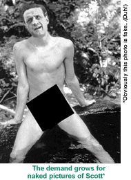

|
I must say, 1995 was a great year for me. I went
from licking stamps and making photocopies at
temporary jobs to licking stamps and making
photocopies for fun in my leisure time. I spent
another year living in my parents' house, patting my cats on their heads and using Kai's Power Tools to fix images of my
bald spot. If my growing success with the Texture Explorer is any indication, 1996 will be even better.
Still, there is a lot of room for improvement. I need to become more active -- typing faster hasn't affected my cardiovascular system like I'd hoped. I need to open myself to other avenues and experiences. Find myself a girlfriend; maybe two or three. I was thinking of having one for each of my e-mail addresses. I know I should also read more, maybe write a screenplay, learn to play a musical instrument and learn a foreign language. I could work out, learn to meditate, do yoga or karate. Possibly even try a yoga/karate hybrid, although I'll need to be careful not to kick myself in the face. Those are all big steps. Right now, I spend most of my time either sitting at my computer or being passed out a few feet away from it. That's why, despite my psychiatrists' urgings, I've decided to leave the above resolutions for 1997. That doesn't mean I won't make important changes in 1996. Here's a few.
I plan to change the name I use on MUDs. Foobies? What kind of name is Foobies? Initially I used it because it's the password to my ATM card. It helped me remember it. I've been thinking of changing my password, though, and so now Foobies seems expendable. I plan to create a more friendly search engine. Right now, all Web crawlers are computer-driven. This one will be completely organic. I'm going to do all the searching myself, by hand. I'm going to keep everything on index cards. I'm not going to give it a special name or anything, but you might want to call it Mirsky. I plan to develop and propagate a new graphics file format that uses a combination of GIF and JPEG technologies. It's spelled JPEGIF. It works fine. It's just taking a long time to determine how people should pronounce it. I plan to create a new e-mail signature. With a little time, I should be able to make a much more accurate depiction of the chemical structure for Prozac. I plan to start exploring new channels on IRC (inter-relay chat). I recently learned a few Finnish swear words, so now I should have some idea when I'm about to get kicked out of the better ones.  I plan to read the alt.binaries. nude.celebrities newsgroup more frequently. I just know there were requests for my George C. Scott pics. Did I miss them again? I plan to stop people from talking dirty in the WebChat Lounge channels. I think I can have everything under control by copying and pasting in some song lyrics from this location: http://bigdipper.umd. edu/music/lyrics/reek.of.putrefaction. I plan to try one of those "Make money fast!" offers constantly posted on Usenet. I figure if it doesn't work out, I'll just start posting messages that it's a big scam like everybody else. I plan to hack into the government site that stores everyone's immunization records. I can't remember whether I've been vaccinated for cholera. I have a very business-like relationship with my doctor and I'm too uncomfortable to ask. I'm also the number one fan of Holly Hunter. I can't rest until I know she's been properly inoculated. I plan to rename the World Wide Web. I haven't thought of what I'm going to call it yet, but it's going make it a lot more popular. |
MIRSKY'S "WORST OF THE WEB" CAN BE FOUND AT http://mirsky.turnpike.net/wow/Worst.html